Intensive-Care
Ambulance Jet
For patients requiring a high level of clinical monitoring and care throughout the transfer.

Private medical aviation, coordinated with discretion from first conversation to safe handover.
Jettset Medical Aviation is not an emergency response service. If immediate emergency assistance is required, contact the emergency services in your location.From a simple repatriation to a complex critical-care mission, we match the right aircraft and the right medical team to every patient, every time.
For patients requiring a high level of clinical monitoring and care throughout the transfer.
Dedicated medical-aircraft transport for patients who require continuous professional care while travelling.
For eligible patients who are medically stable but unable to travel seated on a scheduled airline.
For patients able to travel commercially but requiring clinical assistance, monitoring or support during the journey.

Jettset coordinates the journey around the flight while our certified medical aviation partner manages the clinical and operational requirements of the medical transfer.
Our certified medical aviation partner provides and determines clinical capability and equipment across the global fleet.
A four-year-old patient in Niš was ventilator-dependent and required specialist treatment in Austin, Texas.
After a stroke and a serious pressure ulcer, a patient in Berlin needed to move closer to her daughters in Bavaria.
After decades in psychiatric care in New Jersey, a patient needed to move closer to his only family in Texas.
Our certified medical aviation partner determines aircraft, clinical capability and configuration for each individual mission.

Regional / Short-Field
Suited to regional transfers where flexible airfield access supports a carefully coordinated journey.

Light / Midsize Medical Jet
A representative midsize option for domestic and shorter international medical transfers.

Long-Range / Specialist
A representative long-range platform for complex international and specialist missions.
Configurations shown are representative examples based on real operator layouts. Actual aircraft, equipment and staffing are confirmed by our certified medical aviation partner for each individual mission.
Jettset acts as an air-charter broker and medical-flight coordinator. Aircraft operations, medical assessment, clinical personnel and onboard care are provided by our certified medical aviation partner.
Timing depends on medical assessment, aircraft and crew availability, documentation, route permissions and ground coordination. Jettset will establish the requirements with our certified medical aviation partner and provide the clearest available plan.
Fitness to fly and the required level of care are assessed by our certified medical aviation partner’s clinical team.
Where the patient’s condition, aircraft configuration and operational requirements allow, companion travel can be considered as part of the transfer plan.
Pricing reflects the route, aircraft, medical team and equipment, ground transport, permissions, availability, timing and other mission requirements.
Yes. Where included in the agreed transfer, Jettset can coordinate the journey around the flight while our certified medical aviation partner manages the clinical and operational medical-transfer requirements.
This initial enquiry opens the conversation. Clinical records must not be uploaded through this form.
Do not upload confidential medical reports through this form. If clinical documents are required, our team will provide instructions for the approved secure process.
When a medical transfer crosses cities, borders, clinical teams and transport providers, clarity matters.
Jettset brings the journey together — coordinating with our certified medical aviation partner so the patient, family and wider transfer remain connected from first enquiry through arrival.